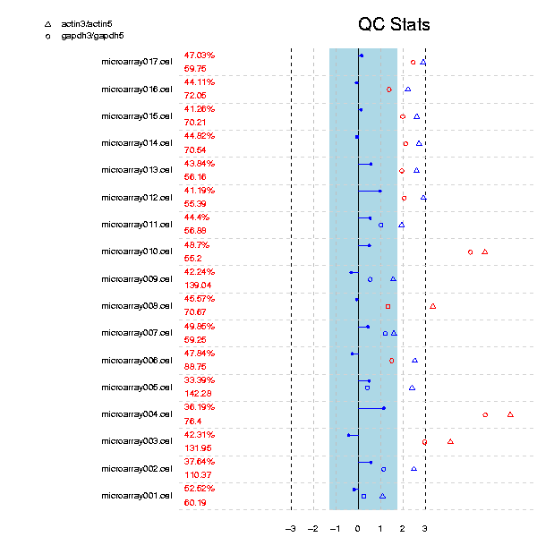
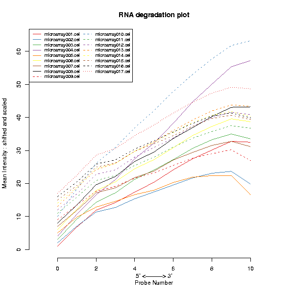
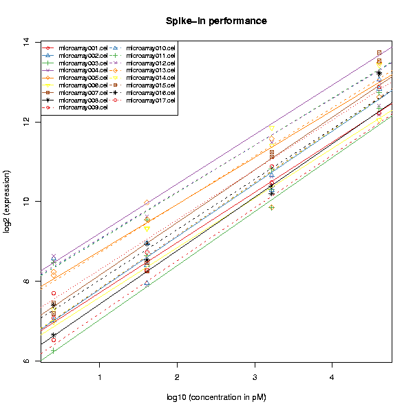

Performs some basic quality control for Affymetrix arrays.
Creates three plots for the dataset: general quality control parameters for each chip, RNA degradation, and spike-in performance.
The QC stats plot reports quality control parameters for the chips. Different chips are separated by horizontal grey lines in the plot. The blue numbers on the left report the number of probesets with present flag, and the average background on the chip. The blue region in the middle denotes the area where scaling factors are less than 3-fold of the mean scale factors of all chips. Bars that end with a point denote scaling factors for the chips. The triangles denote beta-actin 3':5' ratio, and open circles are GADPH 3':5' ratios. If the scaling factors or ratios fall within the 3-fold region (1.25-fold for GADPH), they are colored blue, otherwise red. The deviant chips are therefore easy to pick out by their red coloring.
The RNA digestion plot reports RNA degradation from 5' to 3' end of the genes. Optimally the lines of the plot would lie on a horizontal line, but this is typically never reached. In practise, it suffices to check that the slopes and profiles of the lines are approximately similar for all chips in the same experiment.
The performance of the hybridization for each array can be monitored in the Spike-in performance plot. The slope of the fitted lines should be roughly equal between arrays while simultaneously having similar y-axis intercepts. A sample for which the slope is significantly different from the others and/or the intercept is offset more than 2 times from the rest, it's a clear indication that something might have gone wrong during sample loading or hybridization.
